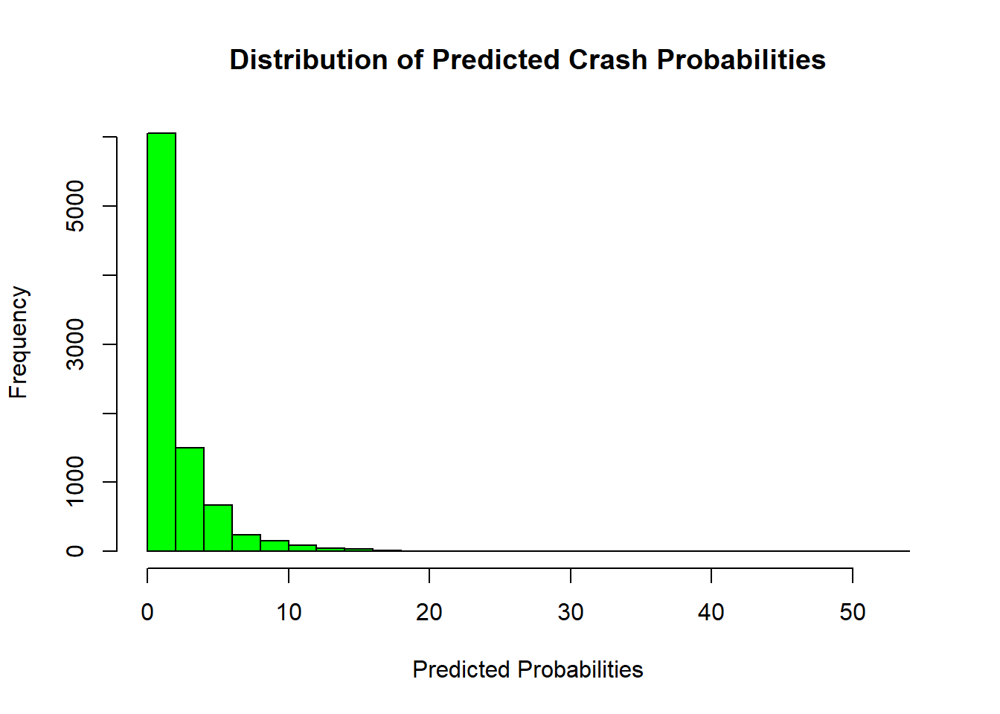

# Probability theory using Negative Binomial
#please find the explanation at the end of the code!
#Install the package for Negative Binomial
setwd('C:/Users/behro/OneDrive/Desktop/SS-Infrastructure/project')
#install.packages("lme4")
library(MASS)
#library(ggcorrplot)
#install.packages("ggcorrplot")
#install.packages("ggplot2")
# Read in data
FitData2<-read.csv('Book3.csv')
#looking at the data
names(FitData2) [1] "AADT" "Latitude" "Longitude" "yn" "Divided"
[6] "LaneCount" "DGAC" "Latex" "SMA" "PCCP"
[11] "Age" "Friction" "Macro" "IRI" "Gradient"
[16] "Curvature" "LatitudeGPS" "LongitudeGps" "Crash" "lnAADT" sapply(FitData2, function(x) table(is.na(x))) AADT.FALSE Latitude.FALSE Longitude.FALSE yn.FALSE
8816 8816 8816 8816
Divided.FALSE LaneCount.FALSE DGAC.FALSE Latex.FALSE
8816 8816 8816 8816
SMA.FALSE PCCP.FALSE Age.FALSE Friction.FALSE
8816 8816 8816 8816
Macro.FALSE IRI.FALSE Gradient.FALSE Curvature.FALSE
8816 8816 8816 8816
LatitudeGPS.FALSE LongitudeGps.FALSE Crash.FALSE lnAADT.FALSE
8816 8816 8816 8816 # Correlation Matrix
cormat<- cor(FitData2)
cormat AADT Latitude Longitude yn Divided
AADT 1.000000000 0.382693033 0.336510001 -0.1036752130 0.35229051
Latitude 0.382693033 1.000000000 0.549169304 0.0867984066 0.07971012
Longitude 0.336510001 0.549169304 1.000000000 0.0615009111 0.09100533
yn -0.103675213 0.086798407 0.061500911 1.0000000000 -0.10401913
Divided 0.352290506 0.079710125 0.091005327 -0.1040191257 1.00000000
LaneCount 0.144392325 0.204102326 0.259898519 0.1087742622 -0.42121275
DGAC -0.342787046 -0.186630838 -0.267382176 0.1986031579 -0.35249134
Latex -0.143490494 -0.217002363 -0.329335117 0.0049419700 0.04027118
SMA 0.482314027 0.292613391 0.356983572 -0.1982727448 0.29135814
PCCP -0.104437562 0.052998652 0.241103815 -0.0237787399 0.11698407
Age -0.158760926 -0.024844945 0.158414166 -0.0004544039 -0.05989411
Friction -0.415230010 -0.389880287 -0.438834333 -0.1678539143 -0.09097330
Macro 0.092220941 0.023476717 -0.041446945 -0.0582230520 -0.01326821
IRI -0.160528788 0.041491845 0.140259933 0.3264015510 -0.22222393
Gradient 0.005037783 -0.003607073 -0.005207780 0.0036117087 0.01007699
Curvature 0.061725730 0.010116036 -0.002109046 0.1469357438 -0.02601795
LatitudeGPS 0.382692421 0.999999967 0.549167479 0.0867951489 0.07970644
LongitudeGps 0.336512300 0.549168585 0.999999961 0.0615026871 0.09100524
Crash 0.361690726 0.244032354 0.186330460 0.2336554548 0.15408900
lnAADT 0.835351570 0.342518127 0.324002405 -0.0195230055 0.40428459
LaneCount DGAC Latex SMA PCCP
AADT 0.144392325 -0.34278705 -0.143490494 0.4823140266 -0.104437562
Latitude 0.204102326 -0.18663084 -0.217002363 0.2926133913 0.052998652
Longitude 0.259898519 -0.26738218 -0.329335117 0.3569835715 0.241103815
yn 0.108774262 0.19860316 0.004941970 -0.1982727448 -0.023778740
Divided -0.421212754 -0.35249134 0.040271179 0.2913581427 0.116984071
LaneCount 1.000000000 -0.00429124 -0.079532105 0.0817235549 -0.073712310
DGAC -0.004291240 1.00000000 -0.298559690 -0.7697597871 -0.224670040
Latex -0.079532105 -0.29855969 1.000000000 -0.2254810823 -0.065811237
SMA 0.081723555 -0.76975979 -0.225481082 1.0000000000 -0.169677440
PCCP -0.073712310 -0.22467004 -0.065811237 -0.1696774395 1.000000000
Age -0.015097045 -0.05923362 -0.161581052 -0.1334001818 0.650244134
Friction -0.174884591 0.21076334 0.243654955 -0.3719020243 0.036211487
Macro 0.132768160 -0.08099538 -0.080735534 0.1798355619 -0.114403038
IRI 0.127621155 0.18473958 -0.009695252 -0.2889567507 0.233892002
Gradient -0.007350165 -0.00110724 0.011015114 -0.0008447454 -0.009595485
Curvature 0.024597182 0.07032162 0.029959542 -0.0716087422 -0.041406475
LatitudeGPS 0.204101348 -0.18662624 -0.217004614 0.2926093663 0.052999860
LongitudeGps 0.259893844 -0.26737941 -0.329337823 0.3569835555 0.241100795
Crash 0.144932017 -0.01725508 -0.061020210 0.0790970272 -0.060913658
lnAADT 0.044847392 -0.31190922 -0.095631964 0.4253369237 -0.109064489
Age Friction Macro IRI
AADT -0.1587609255 -0.415230010 0.0922209412 -0.160528788
Latitude -0.0248449450 -0.389880287 0.0234767171 0.041491845
Longitude 0.1584141663 -0.438834333 -0.0414469448 0.140259933
yn -0.0004544039 -0.167853914 -0.0582230520 0.326401551
Divided -0.0598941084 -0.090973297 -0.0132682097 -0.222223926
LaneCount -0.0150970455 -0.174884591 0.1327681600 0.127621155
DGAC -0.0592336203 0.210763341 -0.0809953807 0.184739579
Latex -0.1615810517 0.243654955 -0.0807355339 -0.009695252
SMA -0.1334001818 -0.371902024 0.1798355619 -0.288956751
PCCP 0.6502441336 0.036211487 -0.1144030381 0.233892002
Age 1.0000000000 -0.004908474 0.0556296414 0.257779550
Friction -0.0049084743 1.000000000 -0.0578124559 -0.208562713
Macro 0.0556296414 -0.057812456 1.0000000000 0.091219056
IRI 0.2577795499 -0.208562713 0.0912190564 1.000000000
Gradient -0.0089316816 -0.002515723 -0.0001392182 -0.015133902
Curvature -0.0219502445 -0.139511290 0.0257072470 0.204565067
LatitudeGPS -0.0248450008 -0.389879453 0.0234781289 0.041493732
LongitudeGps 0.1584140933 -0.438832739 -0.0414425553 0.140257999
Crash -0.0983321348 -0.302675329 -0.0168212158 0.173922828
lnAADT -0.1763974925 -0.392309573 -0.0114531822 -0.155893535
Gradient Curvature LatitudeGPS LongitudeGps Crash
AADT 0.0050377827 0.061725730 0.382692421 0.336512300 0.361690726
Latitude -0.0036070735 0.010116036 0.999999967 0.549168585 0.244032354
Longitude -0.0052077804 -0.002109046 0.549167479 0.999999961 0.186330460
yn 0.0036117087 0.146935744 0.086795149 0.061502687 0.233655455
Divided 0.0100769888 -0.026017952 0.079706439 0.091005243 0.154088999
LaneCount -0.0073501646 0.024597182 0.204101348 0.259893844 0.144932017
DGAC -0.0011072403 0.070321624 -0.186626245 -0.267379408 -0.017255081
Latex 0.0110151144 0.029959542 -0.217004614 -0.329337823 -0.061020210
SMA -0.0008447454 -0.071608742 0.292609366 0.356983555 0.079097027
PCCP -0.0095954854 -0.041406475 0.052999860 0.241100795 -0.060913658
Age -0.0089316816 -0.021950245 -0.024845001 0.158414093 -0.098332135
Friction -0.0025157234 -0.139511290 -0.389879453 -0.438832739 -0.302675329
Macro -0.0001392182 0.025707247 0.023478129 -0.041442555 -0.016821216
IRI -0.0151339016 0.204565067 0.041493732 0.140257999 0.173922828
Gradient 1.0000000000 -0.009613057 -0.003608268 -0.005203478 -0.009375788
Curvature -0.0096130566 1.000000000 0.010119044 -0.002105554 0.125889418
LatitudeGPS -0.0036082680 0.010119044 1.000000000 0.549166759 0.244025290
LongitudeGps -0.0052034777 -0.002105554 0.549166759 1.000000000 0.186335639
Crash -0.0093757875 0.125889418 0.244025290 0.186335639 1.000000000
lnAADT 0.0066595772 0.043316382 0.342518906 0.324003528 0.302312430
lnAADT
AADT 0.835351570
Latitude 0.342518127
Longitude 0.324002405
yn -0.019523006
Divided 0.404284590
LaneCount 0.044847392
DGAC -0.311909222
Latex -0.095631964
SMA 0.425336924
PCCP -0.109064489
Age -0.176397492
Friction -0.392309573
Macro -0.011453182
IRI -0.155893535
Gradient 0.006659577
Curvature 0.043316382
LatitudeGPS 0.342518906
LongitudeGps 0.324003528
Crash 0.302312430
lnAADT 1.000000000#Set the reference value for a categorical variable. (NO categorical as I made them binary in the excel file, so I commented)
FitData2$yn<-as.factor(FitData2$yn)
FitData2$Divided<-as.factor(FitData2$Divided)
FitData2$DGAC<-as.factor(FitData2$DGAC)
FitData2$SMA<-as.factor(FitData2$SMA)
FitData2$PCCP<-as.factor(FitData2$PCCP)
FitData2$Latex<-as.factor(FitData2$Latex)
#Create a base model binomial model. The SPF should always include traffic volume and I must input the natural log conversion of the traffic volume, i.e., ln(AADT).
base_model <- glm.nb(Crash ~ lnAADT,data = FitData2)
full_modell<-glm.nb(Crash~ lnAADT+ yn + Divided + LaneCount + DGAC + Latex + SMA + PCCP + Age + Friction + Macro + IRI + Gradient + Curvature, data=FitData2)
#Create the full model
StepWiseFit <- step(base_model,scope = list(lower= base_model,upper= full_modell),direction = 'forward') Start: AIC=30177.42
Crash ~ lnAADT
Df Deviance AIC
+ Friction 1 7207.9 29123
+ yn 1 7399.3 29315
+ IRI 1 7825.1 29741
+ LaneCount 1 7909.9 29825
+ Curvature 1 8116.7 30032
+ Divided 1 8120.5 30036
+ Age 1 8188.1 30104
+ Latex 1 8202.5 30118
+ PCCP 1 8241.4 30157
+ SMA 1 8253.3 30169
+ Macro 1 8255.9 30172
+ DGAC 1 8258.4 30174
<none> 8263.8 30177
+ Gradient 1 8263.7 30179
Step: AIC=29051.58
Crash ~ lnAADT + Friction
Df Deviance AIC
+ yn 1 7511.1 28457
+ LaneCount 1 7895.0 28841
+ IRI 1 7922.6 28869
+ Divided 1 7940.0 28886
+ Age 1 8014.8 28961
+ Curvature 1 8023.1 28969
+ DGAC 1 8070.3 29016
+ PCCP 1 8087.4 29033
+ SMA 1 8096.2 29042
+ Macro 1 8097.5 29043
+ Latex 1 8100.3 29046
<none> 8107.7 29052
+ Gradient 1 8107.7 29054
Step: AIC=28413.95
Crash ~ lnAADT + Friction + yn
Df Deviance AIC
+ Divided 1 7936.5 28134
+ LaneCount 1 8026.4 28224
+ Age 1 8126.2 28323
+ Curvature 1 8172.1 28369
+ SMA 1 8181.1 28378
+ IRI 1 8190.5 28388
+ Latex 1 8199.6 28397
+ PCCP 1 8200.9 28398
+ DGAC 1 8214.4 28412
<none> 8218.8 28414
+ Macro 1 8218.4 28416
+ Gradient 1 8218.5 28416
Step: AIC=28130.91
Crash ~ lnAADT + Friction + yn + Divided
Df Deviance AIC
+ LaneCount 1 7655.2 27669
+ Age 1 8030.6 28044
+ IRI 1 8066.6 28080
+ Curvature 1 8069.9 28083
+ PCCP 1 8086.9 28100
+ Latex 1 8091.4 28105
+ SMA 1 8110.7 28124
+ DGAC 1 8115.2 28129
<none> 8119.4 28131
+ Gradient 1 8118.7 28132
+ Macro 1 8119.4 28133
Step: AIC=27650.25
Crash ~ lnAADT + Friction + yn + Divided + LaneCount
Df Deviance AIC
+ Age 1 8028.9 27570
+ IRI 1 8033.3 27575
+ Curvature 1 8061.8 27603
+ PCCP 1 8089.6 27631
+ DGAC 1 8091.0 27633
+ Macro 1 8095.6 27637
+ Latex 1 8098.4 27640
<none> 8110.8 27650
+ SMA 1 8110.2 27652
+ Gradient 1 8110.6 27652
Step: AIC=27569.83
Crash ~ lnAADT + Friction + yn + Divided + LaneCount + Age
Df Deviance AIC
+ IRI 1 8001.2 27467
+ Curvature 1 8057.8 27523
+ Latex 1 8082.9 27548
+ Macro 1 8090.2 27556
+ DGAC 1 8095.8 27561
<none> 8106.4 27570
+ SMA 1 8105.1 27571
+ PCCP 1 8105.2 27571
+ Gradient 1 8106.0 27571
Step: AIC=27464.61
Crash ~ lnAADT + Friction + yn + Divided + LaneCount + Age +
IRI
Df Deviance AIC
+ Curvature 1 8127.6 27436
+ Latex 1 8129.7 27438
+ Macro 1 8138.0 27447
+ SMA 1 8155.2 27464
+ DGAC 1 8155.6 27464
<none> 8158.0 27465
+ PCCP 1 8156.7 27465
+ Gradient 1 8157.7 27466
Step: AIC=27436.14
Crash ~ lnAADT + Friction + yn + Divided + LaneCount + Age +
IRI + Curvature
Df Deviance AIC
+ Latex 1 8125.0 27408
+ Macro 1 8132.8 27416
+ SMA 1 8151.6 27435
+ DGAC 1 8152.5 27436
<none> 8154.7 27436
+ PCCP 1 8154.1 27438
+ Gradient 1 8154.4 27438
Step: AIC=27408.4
Crash ~ lnAADT + Friction + yn + Divided + LaneCount + Age +
IRI + Curvature + Latex
Df Deviance AIC
+ Macro 1 8111.6 27385
<none> 8136.7 27408
+ SMA 1 8136.2 27410
+ PCCP 1 8136.2 27410
+ Gradient 1 8136.4 27410
+ DGAC 1 8136.5 27410
Step: AIC=27385.32
Crash ~ lnAADT + Friction + yn + Divided + LaneCount + Age +
IRI + Curvature + Latex + Macro
Df Deviance AIC
+ SMA 1 8127.9 27383
+ DGAC 1 8129.7 27385
<none> 8132.2 27385
+ PCCP 1 8130.5 27386
+ Gradient 1 8131.9 27387
Step: AIC=27383.04
Crash ~ lnAADT + Friction + yn + Divided + LaneCount + Age +
IRI + Curvature + Latex + Macro + SMA
Df Deviance AIC
<none> 8120.2 27383
+ DGAC 1 8119.0 27384
+ PCCP 1 8119.0 27384
+ Gradient 1 8119.9 27385summary(StepWiseFit)
Call:
glm.nb(formula = Crash ~ lnAADT + Friction + yn + Divided + LaneCount +
Age + IRI + Curvature + Latex + Macro + SMA, data = FitData2,
init.theta = 0.9268485234, link = log)
Deviance Residuals:
Min 1Q Median 3Q Max
-2.7462 -0.9723 -0.5686 0.2126 7.4490
Coefficients:
Estimate Std. Error z value Pr(>|z|)
(Intercept) -2.333449 0.236090 -9.884 < 2e-16 ***
lnAADT 0.303521 0.014160 21.435 < 2e-16 ***
Friction -0.054863 0.002623 -20.915 < 2e-16 ***
yn1 0.829530 0.036787 22.550 < 2e-16 ***
Divided1 1.207650 0.050552 23.889 < 2e-16 ***
LaneCount 0.542440 0.024544 22.100 < 2e-16 ***
Age -0.022080 0.002018 -10.943 < 2e-16 ***
IRI 0.200922 0.020445 9.827 < 2e-16 ***
Curvature 204.398987 29.403738 6.951 3.62e-12 ***
Latex1 -0.350783 0.068954 -5.087 3.63e-07 ***
Macro -0.471428 0.087670 -5.377 7.56e-08 ***
SMA1 0.080317 0.039742 2.021 0.0433 *
---
Signif. codes: 0 '***' 0.001 '**' 0.01 '*' 0.05 '.' 0.1 ' ' 1
(Dispersion parameter for Negative Binomial(0.9268) family taken to be 1)
Null deviance: 14113.4 on 8815 degrees of freedom
Residual deviance: 8120.2 on 8804 degrees of freedom
AIC: 27385
Number of Fisher Scoring iterations: 1
Theta: 0.9268
Std. Err.: 0.0266
2 x log-likelihood: -27359.0430 summary(StepWiseFit)$coefficients Estimate Std. Error z value Pr(>|z|)
(Intercept) -2.33344930 0.236090474 -9.883708 4.898601e-23
lnAADT 0.30352129 0.014160144 21.434901 6.316823e-102
Friction -0.05486347 0.002623175 -20.914910 3.917635e-97
yn1 0.82953006 0.036786588 22.549796 1.349053e-112
Divided1 1.20765000 0.050551760 23.889376 3.949606e-126
LaneCount 0.54244042 0.024544432 22.100345 3.136613e-108
Age -0.02207983 0.002017757 -10.942757 7.197696e-28
IRI 0.20092202 0.020445238 9.827326 8.586842e-23
Curvature 204.39898667 29.403737606 6.951463 3.615179e-12
Latex1 -0.35078254 0.068954031 -5.087194 3.633999e-07
Macro -0.47142753 0.087669743 -5.377312 7.560621e-08
SMA1 0.08031675 0.039741777 2.020965 4.328337e-02# Create a histogram of predicted counts
hist(StepWiseFit$fitted.values,
main = "Distribution of Predicted Crash Probabilities",
xlab = "Predicted Probabilities",
ylab = "Frequency",
col = "green",
border = "black",
breaks = 20)